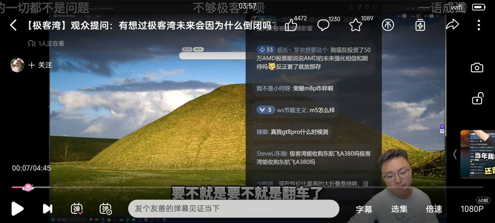
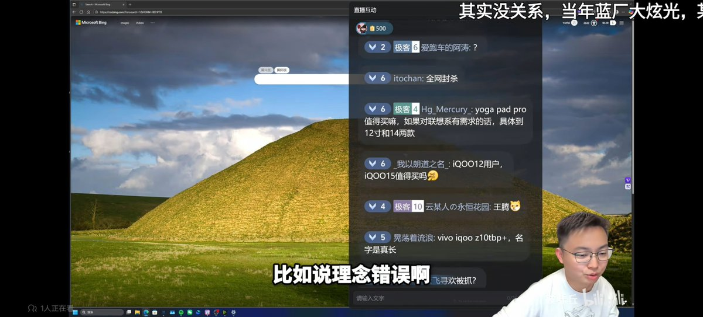
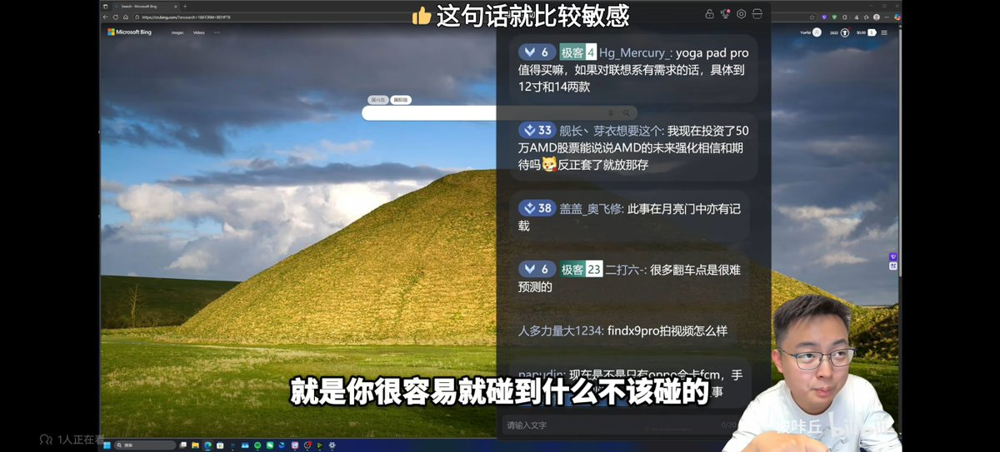

炒作的最后都是暴雷，虽然自己对于某人不是很感兴趣。但有点想到云飞此前直播的一个切片了
与其去校验这个东西是不是对的，一开始的时候就不要去碰他。
云飞举的这个例子，分辨出世界地图究竟是不是对的极其困难。那在选择素材的时候就不要引用它
搞清楚自己的受众和界限是什么，某些人真的是被欲望吞噬了。初心是为了激励真正值得被激励的那部分人，而不是为了给低质量无意义甚至重复搬运的东西薅羊毛变现。墙内的或者b站以前的低质视频，后续呢？激励规则变得越来难以触发和严格。完全就是在挤占真正的中小型创作者的空间，我不知道是否有人会把搬运和发表争议言论称作创造。不该碰的别碰，制造争议真有点学新闻学的了。自己要搬出这些就等着被反嗜吧，为了赚钱想疯了
与其去校验这个东西是不是对的，一开始的时候就不要去碰他。
云飞举的这个例子，分辨出世界地图究竟是不是对的极其困难。那在选择素材的时候就不要引用它
搞清楚自己的受众和界限是什么，某些人真的是被欲望吞噬了。初心是为了激励真正值得被激励的那部分人，而不是为了给低质量无意义甚至重复搬运的东西薅羊毛变现。墙内的或者b站以前的低质视频，后续呢？激励规则变得越来难以触发和严格。完全就是在挤占真正的中小型创作者的空间，我不知道是否有人会把搬运和发表争议言论称作创造。不该碰的别碰，制造争议真有点学新闻学的了。自己要搬出这些就等着被反嗜吧，为了赚钱想疯了


